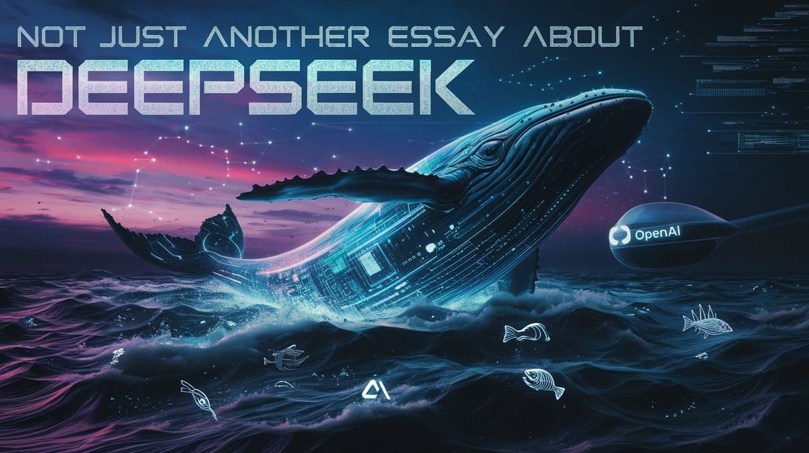

:: Now begins a story...
May I present to you, a finely curated section of a fine collection of the wonderful web we weave with a weekly roundup of bits and pieces from the far corners of the super information highway that I like to call — Token Wisdom ✨


The art challenges the technology, and the technology inspires the art.

Editor's Notes 📆 Week 5 of 52
// January 26th 🧿 February 1st, 2025
Welcome to the 93rd edition of Token Wisdom! This week, we're diving into a vibrant mix of tech innovations, legal battles, and strategic insights that are shaping our digital future.
From AI courtroom showdowns and revolutionary automotive displays to Wikipedia's fundraising ingenuity and the UAE's ambitious AI investments, there's something intriguing for every tech enthusiast.
Join us as we explore the latest developments in AI ethics, semiconductor advancements, and the evolving landscape of computing architectures.
Don't miss our video picks, showcasing everything from spiritual journeys to groundbreaking typographic revolutions, providing a comprehensive view of our rapidly evolving digital world.
Listen to Google's NotebookLM Duo cover this week's Pearls of Wisdom:


Enjoy The Newest Latest, A Closer Look & Time Well Spent!

🎉 Newest / Latest
100% Authentic Humanly Chosen

From Spreadsheet Sports to AI Ethics: A Kaleidoscope of Tech Innovations and Digital Dilemmas
From AI lawyers in digital courtrooms to BMW's sci-fi windshield displays, our tech-driven world evolves rapidly. The UAE bets big on AI, while ethical dilemmas surround AI training. RISC-V laptops challenge computing norms, and Wikipedia's fundraising gets creative. These stories showcase how technology reshapes law, automotive design, computing, and information access, painting a vivid picture of our digital future.
#MarketingHack: Wikipedia's $169m "Maybe Later" trick revealed
#AutoTech: BMW's new iDrive transforms entire windshield into heads-up display
#DesignTrends: Upcoming design trends for 2025 unveiled
#AIEthics: Zuckerberg approved training Llama on copyrighted works, filing claims
#AIInvestment: UAE's $1.5 trillion AI ambitions led by chess-obsessed intelligence chief
#Semiconductors: TSMC's Arizona Fab 21 already producing 4nm chips at Taiwan-level quality
#Computing: RISC-V laptops set to challenge Arm and x86 architectures
#StockAnalysis: Is Palantir overvalued or just expensive?
#SaaSTips: 2025 review of monthly vs. yearly subscription models
If you share these ten articles on social media, experts predict a 420% increase in your chances of accidentally creating a sentient meme that becomes your personal financial advisor and insists on communicating exclusively through interpretive dance GIFs.
Warning: Side effects may include spontaneous levitation during video calls and an uncontrollable urge to debug your houseplants. This groundbreaking study was conducted by the esteemed Institute of Improbable Probabilities, peer-reviewed by a committee of time-traveling cats.
👁️ A Closer Look
Attempts to explore a subject and share my thoughts.

Not Just Another Essay About DeepSeek: A Ransomware Edition
W04 - 2024: Silicon Valley unleashes AI ransomware on a global scale. Your creativity is the target. The ransom? Your future. Pay to protect your own ideas, or watch AI replicate them endlessly. Welcome to the digital protection racket, where innovation comes at a price.
 🌶️ iamkhayyam
🌶️ iamkhayyam
✨ Token Wisdom
A Closer Look: Explorations in Technology
Weekly essay in the areas of blockchain, artificial intelligence, extended reality, quantum computing, and all the bits and pieces.

A Closer Look: Explorations in Technology
Weekly essay in the areas of blockchain, artificial intelligence, extended reality, quantum computing, and all the bits and pieces.


📺 Time Well Spent
Top Ten of the Time I Spend

Mercedes' Mobile Data Centers, AI Controversies, and Financial Exposés: A Visual Voyage Through Tech and Culture
This week's visuals offer a diverse view of our evolving world, from automotive innovations to AI controversies and financial exposés. Explore Mercedes-Benz's mobile data centers, essential video techniques, and entrepreneurship in the AI age. From motivational speeches to PCB prototyping and cybersecurity history, these videos challenge our perspectives on tech and culture.
#AINews: Claude's darkweb 'hitman' hire stuns AI researchers
#Finance: How one woman exposed Wall Street's secrets
#VideoTips: The only shots you'll ever need for unplanned shoots
#CareerAdvice: AI forces everyone into entrepreneurship - real-time strategy session
#TechWar: The hidden struggle in the global microchip industry
#Motivation: Simon Sinek's powerful speech on focusing on yourself in 2025
#StartupInsights: Candid interview with Scale.AI CEO Alex Wang
#DIYTech: Prototyping PCBs faster than 3D prints
#CyberSecurity: The first cyber bank heist in history revealed
If you binge all ten videos, leading neuroscientists* swear you'll temporarily gain the ability to taste nearby Wi-Fi signals with your kneecaps. Side effects may include spontaneous yodeling when entering strong hotspots and an irresistible urge to salsa dance with your router.
*Study conducted by the prestigious Institute of Improbable Neurology, peer-reviewed by a panel of psychic octopi and one very confused golden retriever.
Warning: Do not operate heavy machinery or attempt to debug your houseplants while experiencing these symptoms. The FDA has not evaluated these claims, mainly because they're too busy trying to figure out why their office ficus keeps asking for software updates.

✨Token Wisdom
Knowledge Transmuted
In this edition of Token Wisdom, we've explored where groundbreaking technology intersects with unexpected cultural phenomena with The Newest Latest on Side A. Our journey on the flip side was Time Well Spent and has highlighted both technological innovations and the surprising evolution of professional skills into entertainment.
Our journey highlights both technological advancements and the evolution of professional skills into entertainment at the intersection of cutting-edge technology and unexpected cultural shifts. From AI lawyers battling in digital courtrooms to BMW's futuristic windshield displays, we've seen how innovation is reshaping various industries.
The UAE's massive AI investment and the rise of RISC-V laptops showcase our era's rapid technological progress. Meanwhile, the ethical dilemmas surrounding AI training and the creative fundraising strategies of Wikipedia reflect the complex interplay between technology and society.
These developments prompt us to consider how new tools and technologies are redefining our understanding of expertise and reshaping our perceptions of work, entertainment, and cultural heritage. The emergence of spreadsheet sports and the challenges to traditional computing architectures illustrate this transformation.
Despite the pace of innovation, the human element remains crucial. The nuanced discussions around AI ethics and the strategic insights driving technological investments underscore the irreplaceable value of human skill and cultural understanding.

🌈💫 The Less You Know
The More You Learn
Latest Technologies & Innovations:
- AI Lawyers: AI systems engaging in legal battles in digital courtrooms.
- BMW's Futuristic Windshield Display: Transforming entire windshields into heads-up displays.
- UAE's Massive AI Investment: A $1.5 trillion investment in AI technologies.
- RISC-V Laptops: Challenging traditional Arm and x86 architectures.
- Advanced Semiconductor Production: TSMC's Arizona Fab 21 producing 4nm chips at Taiwan-level quality.
- AI Ethics and Training: Developments in AI training methods and associated ethical concerns.
- Mobile Data Centers: Mercedes-Benz collaboration with GitHub to create data centers on wheels.
- Rapid PCB Prototyping: Techniques for prototyping PCBs faster than 3D printing.
- AI-Driven Entrepreneurship: The impact of AI on forcing individuals into entrepreneurship.
- Cybersecurity Advancements: Insights from historical cyber heists informing modern security measures.
Most Important Topics:
- AI in Legal Proceedings - The emergence of AI lawyers battling in digital courtrooms, reshaping the legal landscape.
- Automotive Tech Advancements - BMW's innovation in transforming entire windshields into heads-up displays, revolutionizing driver experience.
- Strategic AI Investments - The UAE's ambitious $1.5 trillion bet on AI, led by a chess-obsessed intelligence chief.
- AI Ethics and Copyright - The controversy surrounding AI training on copyrighted works, as highlighted by allegations against Zuckerberg and Llama.
- Evolving Computing Architectures - The rise of RISC-V laptops challenging traditional Arm and x86 dominance in personal computing.
- Semiconductor Industry Developments - TSMC's success in producing high-quality 4nm chips at its Arizona Fab 21, matching Taiwan-level quality.
- Creative Fundraising Strategies - Wikipedia's innovative "Maybe Later" approach to raising $169 million, showcasing new digital fundraising techniques.
- Tech Industry Legal Battles - Elon Musk's court intervention attempt to force an OpenAI ownership auction, highlighting tensions in AI company governance.
- Emerging Design Trends - The unveiling of upcoming design trends for 2025, indicating shifts in visual and user experience preferences.
- SaaS Business Models - The 2025 review of monthly vs. yearly subscription models, reflecting evolving strategies in software-as-a-service offerings.
Acronyms:
- RISC-V - Reduced Instruction Set Computer, Version 5 (an open standard instruction set architecture)
- SaaS - Software as a Service
- PCB - Printed Circuit Board
- FDA - Food and Drug Administration
- BMW - Bayerische Motoren Werke (Bavarian Motor Works)
- UAE - United Arab Emirates
Technical Terms:
- Heads-up Display (HUD): A transparent display that presents data without requiring users to look away from their usual viewpoints, as seen in BMW's new windshield technology.
- Fab (Fabrication Plant): A facility for manufacturing semiconductor devices, such as TSMC's Arizona Fab 21 producing 4nm chips.
- LLM (Large Language Model): Advanced AI models trained on vast amounts of text data, like OpenAI's GPT or Meta's Llama.
- Mobile Data Center: A portable facility for data processing and storage, exemplified by Mercedes-Benz's collaboration with GitHub.
- Ransomware: A type of malicious software designed to block access to a computer system until a sum of money is paid.
- PCB (Printed Circuit Board): A board that mechanically supports and electrically connects electronic components using conductive tracks.
Just because Jon Snow knows nothing, doesn’t mean you have to.
Embrace the pursuit of knowledge to shape a better tomorrow. Sign up for more Token Wisdom and carry the torch of foresight into the fathomless domains of innovation and beyond.
Until next time: stay smart, and kind, and definitely stay weird!
Become a Token Wisdom subscriber
Illuminate your inbox with the light of knowledge. ✨

Thank you for cruising by the Cult of Innovation
We’re making some Stone Soup here. If you enjoyed this amuse-bouche of news compilations in bite-sized morsels, please share it with your friends and help feed a community. Mmmm. #nomnom.